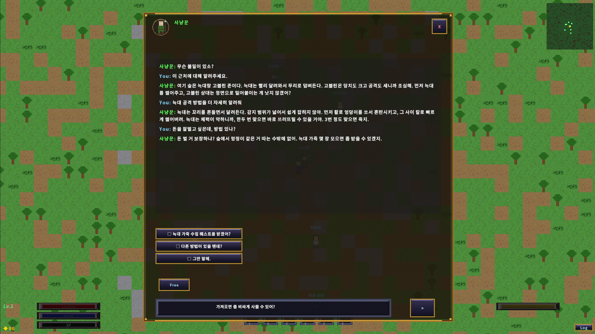
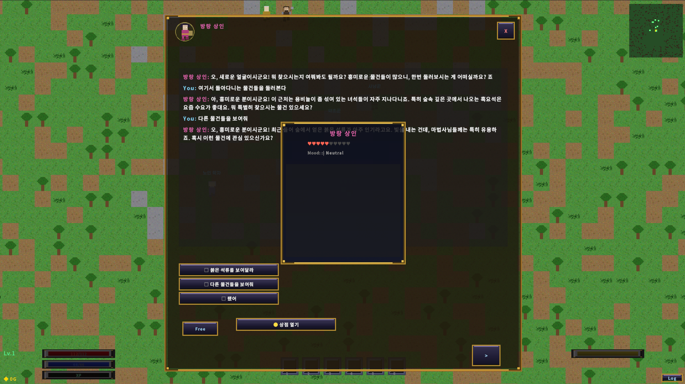

내 역할
Unity 2D 포팅, OllamaClient, NPC 기억 규칙, 퀘스트 연동 흐름을 직접 연결했습니다.
Phaser 3 TypeScript RPG(testgame2)를 Unity 2D C#로 포팅하면서, 게임 런타임에 로컬 Ollama LLM(gemma3) 기반 NPC 인지·대화 시스템을 설계·구현했습니다. 클라우드 API 의존 없이 오프라인 우선 + graceful fallback 구조를 검토한 사례입니다.
Unity 2D 포팅, OllamaClient, NPC 기억 규칙, 퀘스트 연동 흐름을 직접 연결했습니다.
클라우드 의존 없이 NPC 대화와 인지 구조를 런타임에 넣고, 실패 시에도 게임 흐름이 유지되어야 했습니다.
gemma3 4B/12B 기반 로컬 LLM과 graceful fallback 구조를 붙였고, 약 3-5초 수준 응답과 퀘스트 연동을 검증했습니다.
망 분리나 오프라인 우선 환경에서도 AI 시스템을 설계할 수 있는지 검토한 실전형 R&D 사례입니다.

인디 게임 NPC 대화에 클라우드 LLM API를 쓰면 플레이어 1인당 분당 API 비용이 발생. 동시 접속자 증가 시 수익 모델이 무너짐.
게임 안 자유 대화가 외부 서버를 통과. 산업 환경에 같은 패턴을 적용한다면 보안 정책상 클라우드 우회 자체가 차단됨.
네트워크가 없어도 게임은 굴러야 함. 클라우드 의존은 곧 가용성 의존. 산업 현장에서도 동일 — 망 분리 환경에서 LLM 활용 가능한가.
Ollama 는 gemma3:4b ~ 12b 같은 소·중형 모델을 로컬에서 약 3-5초 수준 응답 시간으로 실행할 수 있었고, HTTP API 인터페이스로 Unity에서 직접 호출했습니다. 이 프로젝트는 이전 클라우드 기반 흐름을 로컬 LLM 환경으로 옮겨 본 사례입니다.
http://localhost:11434/api/generate 엔드포인트로 fast(gemma3:4b) / large(gemma3:12b) 모델 호출. UnityWebRequest 기반 비동기.
게임 시작 시 3초 가용성 체크 → 성공 시 fast 모델 warm-up 호출 (첫 응답 지연 제거). 실패 시 AiEnabled = false 분기로 오프라인 모드 진입.
30초 UnityWebRequest.timeout + AIManager 단의 CancellationTokenSource 2회 재시도. 최악의 경우 60초 후 fallback 분기.
Ollama 미가동 시 BuildOfflineResponse() 가 NPC mood/relationship 기반 템플릿 응답 생성. 게임 진행 끊김 없음. 100% offline-capable.

gemma3 가 반환한 JSON 응답의 dialogue 필드는 NPC 말풍선 본문으로, options[] 배열은 플레이어 선택지 버튼으로 렌더링됩니다. 위 화면은 사냥꾼 NPC 와의 다중 턴 대화 — 매 턴마다 새로운 prompt 가 PromptBuilder 를 통해 조립되어 OllamaClient 에 전달되고, 응답이 DialogueController 를 거쳐 UI 에 표시됩니다.
Ollama 는 단순한 텍스트 생성기. 진짜 흥미로운 부분은 NPC 인지 상태를 어떻게 모델링하느냐에 있습니다. 각 NPC 에 per-instance NPCBrain 을 부여하고, AIManager 가 게임 진행에 따라 brain 상태를 갱신·직렬화·복원합니다.
id, name, personality, mood (Happy/Neutral/Angry/Scared), relationship (대상별 -100~+100), memory (최근 N개 대화), wantToTalk 플래그, 트리거 발동 이력.
per-NPC brain 등록. 10초 주기로 NPC 1명씩 순환하여 mood 갱신 (관계도 임계값 기반). 플레이어 근처 + 친밀도 ≥ 5 시 wantToTalk 자동 트리거.
Ollama format=json + temperature 0.8 + top_p 0.9 + repeat_penalty 1.3 으로 자유도와 일관성 균형. 응답 schema: { dialogue, options[], action, relationshipChange, newMemory, offerQuest }.
SerializeAllBrains() / RestoreAllBrains() 로 모든 NPC 인지 상태(관계도·memory·트리거 이력)를 SaveSystem 에 통합. 게임 재개 시 NPC 가 플레이어를 "기억"함.
conversation.md, memory.md,
relationship.md, quest.md,
decisions.md를 StreamingAssets에 분리해 프롬프트 규칙과 게임 규칙을 같이 유지했습니다.
newMemory는 매 턴 10자 이내 한국어 요약으로 저장하고, 시스템은 퀘스트 수락/거절, 지역 방문, 레벨업 같은 이벤트를 별도 기억으로 누적합니다.
AI는 offerQuest: true로 제안 타이밍만 결정하고, 실제 퀘스트 내용과 보상 연결은 QuestSystem,
NpcQuestPanel, QuestUI가 기존 데이터 정의로 처리합니다.
Y축 반전(Phaser Y↓ → Unity Y↑)과 시간 단위 변환(ms → seconds), Tilemap 자료구조 마이그레이션, Phaser Scene 라이프사이클을 Unity Scene + GameManager 로 재매핑.
Director / Dev-Backend / Dev-Frontend / Asset+QA. 폴더 소유권 기반 충돌 방지. DXCenter에서 썼던 협업 기준을 다른 도메인에 적용한 사례입니다.
Data/ai-rules 아래의 규칙 문서와
Data/lore 아래의 world, npcs, monsters,
crafting, events 요약 파일을 분리해, 코드 수정 없이 프롬프트 규칙과 세계관 데이터를 갱신할 수 있게 구성했습니다.

NPC 와 대화 시 personality / mood / relationship 기반 자연스러운 응답 생성. JSON 응답에서 action 추출 → quest 제안 등 게임 행동 수행. gemma3:4b 응답 시간 평균 ~3-5초.
Ollama 종료 후 게임 실행 → 가용성 체크 3s 타임아웃 → AiEnabled = false → BuildOfflineResponse 분기. 게임 끊김 없이 진행.
SaveSystem 통합 — SerializeAllBrains() 로 player 와의 관계도 / 트리거 이력 / mood / memory 모두 JSON 직렬화 → 게임 재개 시 복원.
SPEC-S-078 (DialogueSystem AI 응답 타임아웃) 작업으로 CancellationTokenSource 도입, 로딩 UI 시각 피드백 강화. P2 우선순위로 review queue 진행 중.
이 사례는 산업 환경 밖에서도 같은 협업 패턴과 로컬 LLM 운영 방식이 적용 가능한지 확인해 본 R&D 사례입니다. 여기서 다룬 로컬 LLM 운영, 인지 구조, 포팅 방식은 다른 실시간 인터랙션 프로젝트에도 참고할 수 있습니다.
OllamaClient · AIManager · NPCBrain · PromptBuilder · DialogueController 구현과 4 CLI 역할 분리형 협업 보드.